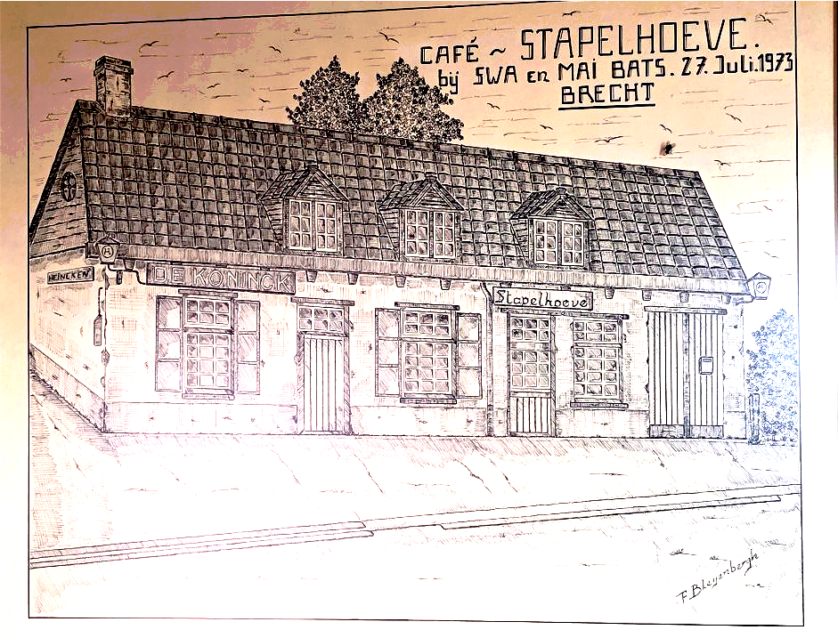

Geschiedenis van de Stapelhoef
Lang voor de geur van vers getapte pinten zich tussen de houten balken nestelde, stond er op de hoek van de Veldstraat een eenvoudige, sobere woning. Gebouwd in 1828-1829 in opdracht van Frans Aerts en Anna Catharina Ploegaerts, ademde dit huisje de nederigheid van een ander tijdperk. Het was een daglonerswoning, niet groot, niet opvallend — maar geworteld in de aarde van de Brechtse velden, als een oude eik die geen storm vreest.
De muren, eenvoudig gemetseld en witgekalkt, hoorden in de loop der jaren het gekletter van klompen, het zachte gejammer van kinderen, en de bonkende hartslag van het boerenleven. Jacobus Vochten en zijn vrouw Josina Smolders woonden hier tussen circa 1840 en 1880. Jacobus verdiende zijn brood als landbouwer, herbergier en dagloner — een man met vele handen, zoals men dat toen noemde. Naar verluidt hield hij ervan om op zondag het nieuws van de week uit te wisselen met buren onder het genot van een jenever, terwijl Josina haar geit borstelde aan de achterdeur.
Generaties kwamen en gingen. De woning, trouw aan zijn oorspronkelijke functie, bleef bescheiden maar standvastig. Toen Catharina Philomena Driesen, weduwe van Frans Knaepkens, in 1969 overleed, viel er een stilte over het huis. Het stond leeg. Het was alsof het zelf moest rouwen, zijn adem inhield, wachtend op een nieuw hoofdstuk.
Dat hoofdstuk kwam in de vorm van kapper Swa Brees en zijn charmante vrouw May Bats (Martens). Twee mensen met een voorliefde voor verhalen en gezelligheid, die het huis in eer herstelden. Ze doopten het om tot ‘De Stapelhoef’, een naam die verwees naar de nabijgelegen Stapelheide, waar de ochtendmist nog elke dag de velden omarmt. De geur van shampoo en tondeuses maakte plaats voor die van koffie, bier en biljartkrijt.
Sinds ongeveer 1975 is de Stapelhoef een café gebleven. Niet zomaar een café — maar een toevluchtsoord voor wielertoeristen, dorstigen, dromers en dorpsbewoners. Hier worden verjaardagen gevierd, liefdes gesmeed, en herinneringen gemaakt. Een kat met de naam 'Koffie' (die niet van melk houdt) dwaalt soms nog tussen de tafels, en elke eerste vrijdag van de maand klinkt er dansmuziek tot ver voorbij middernacht.
De toog, ooit nog handgemaakt door een timmerman uit Wuustwezel, draagt vandaag de sporen van honderden gesprekken. De houten stoelen kraken vriendelijk als oude kennissen. Op regenachtige dagen ruikt het er naar natte jassen en verse pannenkoeken, en op zomeravonden gonst het terras van gelach en het zachte gezoem van fietsbanden die tot rust komen.
De geschiedenis van de Stapelhoef is misschien niet 'uitgebreid' in de zin van dikke boeken en historische veldslagen, maar ze is rijk aan menselijke warmte, aan kleine verhalen die het leven kleur geven. En wie goed luistert, hoort nog steeds het gefluister van de tijd in elke hoek van dit charmante etablissement.
